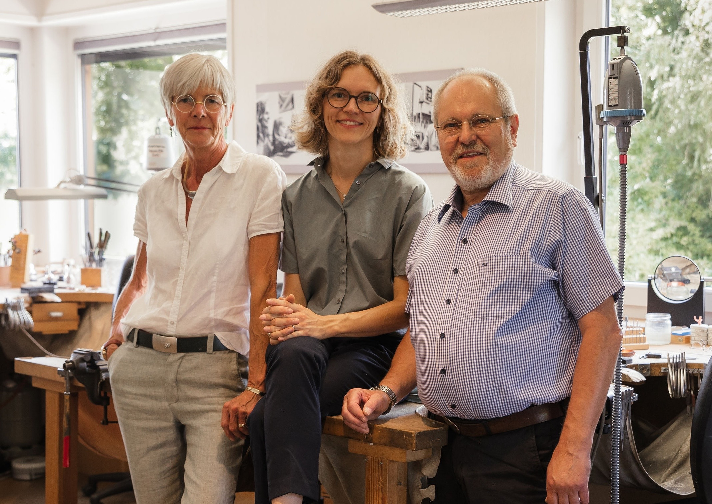

Ich bin Katja und seit Juli 2025 führe ich Die Kreativschmiede – den Familienbetrieb, den mein Großvater gegründet und meine Eltern über vier Jahrzehnte geführt haben.
Nach meinem BWL-Studium in Groningen und zehn Jahren in anderen Berufen bin ich zurückgekehrt zu dem, was mich schon als Kind fasziniert hat: die Goldschmiede. Als letzte Auszubildende meines Vaters habe ich das Handwerk von Grund auf gelernt.
Mein Anspruch: Beratung ohne Verkaufsdruck, Handwerk ohne Kompromisse, Ringe für den Alltag statt für den Moment.
Warum hier
Drei Generationen Erfahrung – ohne veraltete Ansätze.
Kein Verkaufsdruck – der Prozess zählt, nicht der Abschluss.
Von meinem Großvater über meine Eltern bis zu mir – was sich verändert hat und was bleibt.
1. Generation
Hans Schlachter Gründete die Goldschmiede Schlachter und legte das handwerkliche Fundament, auf dem alles aufbaut.
2. Generation
Astrid & Bernd Schlachter Übernahmen 1984, führten die Goldschmiede in Lüchow und entschieden sich 2013 für die reine Werkstatt in Blütlingen.
3. Generation
Katja Süzer Übernahm Juli 2025 mit dem Ziel: Qualität bewahren, Prozesse verbessern, Beratung neu denken.
2013: Der Umzug nach Blütlingen
Als meine Eltern das Ladengeschäft in Lüchow aufgaben und dieses Atelier bauten, war das eine bewusste Entscheidung: Weg von Laufkundschaft und Schaufenster-Druck, hin zu konzentriertem Arbeiten und echter Beratung.
Hier entstanden mehrere Arbeitsplätze, ruhige Beratungsräume und ein Garten – ein Ort, an dem Trauringe Zeit zum Entstehen bekommen. Diese Ruhe und dieser Anspruch bleiben.
Heute
Wer macht was
Katja führt, Astrid und Bernd bleiben aktiv – jeder mit seiner Rolle.

Drei Generationen, eine Werkstatt: Astrid, Katja und Bernd Schlachter.
Katja: Trauringe & Schmuck
Ich bin für alle Trauringe und individuellen Schmuckanfertigungen zuständig. Von der Beratung über die Fertigung bis zur Übergabe – ihr habt es mit mir zu tun.
Was ich mitbringe: BWL-Denken trifft auf Goldschmiede-Handwerk. Strukturierte Prozesse, klare Kommunikation, saubere Arbeit.
Astrid & Bernd: Kurse & Expertise
Meine Eltern haben den Betrieb nicht einfach übergeben. Sie leiten die Goldschmiedekurse, beraten bei komplexen Projekten und sind im Hintergrund da, wenn ihre jahrzehntelange Erfahrung gefragt ist.
Was bleibt: Über 40 Jahre Wissen, das nicht verschwindet – sondern weitergegeben wird.
Goldschmiedekurse
Gestaltet euren eigenen Schmuck
Unter Anleitung von Astrid und Bernd könnt ihr in unserer Werkstatt euer eigenes Schmuckstück erschaffen – Ring, Anhänger, Armband oder was immer ihr im Kopf habt.
Für wen?
Alle ab 15 Jahren – egal ob Anfänger oder mit Vorkenntnissen. Ihr braucht nur Lust aufs Handwerk und eine Idee (oder wir entwickeln eine gemeinsam).
Was entsteht?
Ringe, Anhänger, Armbänder, Ohrringe – jede Art von Schmuck ist möglich. Ihr arbeitet mit echten Materialien (Silber, Gold) und echten Werkzeugen.
Wie läuft's ab?
Ca. 4 Stunden in der Werkstatt, maximal 4 Teilnehmer. Astrid und Bernd begleiten euch Schritt für Schritt – von der Idee bis zum fertigen Stück.
Interessiert?
Die Kurse finden nach Vereinbarung statt. Kontaktiert uns für einen Termin und weitere Details zu Material, Ablauf und Preisen.